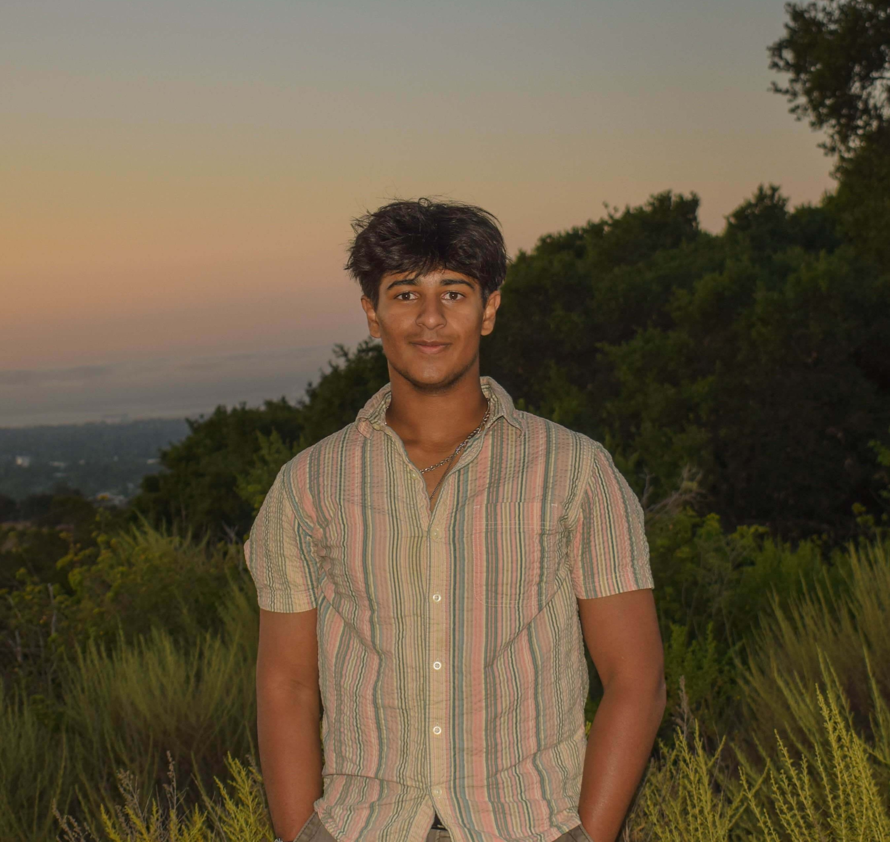

Arya Jangity
University of California,
Santa Cruz
aryajangity52@gmail.com
+1 (408) 921-9940
Currently Working On
Navigation App for the Visually Impaired
BananaBots — Assistive Tech Org
About me
I am a Robotics Engineering undergraduate at the University of California, Santa Cruz, building assistive technology and robotic systems that integrate hardware, embedded software, and cloud-connected applications.
My work spans wearable sensing devices, humanoid manipulation research, indoor navigation for the visually impaired, and large-scale competitive robotics. I am most interested in roles involving embedded systems, firmware, and applied engineering research.
6+
FIRST Regionals
30+
Students Mentored
10+
Org Members Led
80%
Print Quality Gain
Technical Skills
Languages
Systems & Hardware
Tools & Platforms
CAD & Fabrication
Interests
- Robotics & Assistive Technology
- Embedded Systems & Firmware
- Wearable & Sensor-Based Devices
- Humanoid Robotics
- Indoor Navigation & Computer Vision
- Applied Robotics Research
Education
-
B.S. Robotics Engineering
UC Santa Cruz
Expected Graduation: 2028